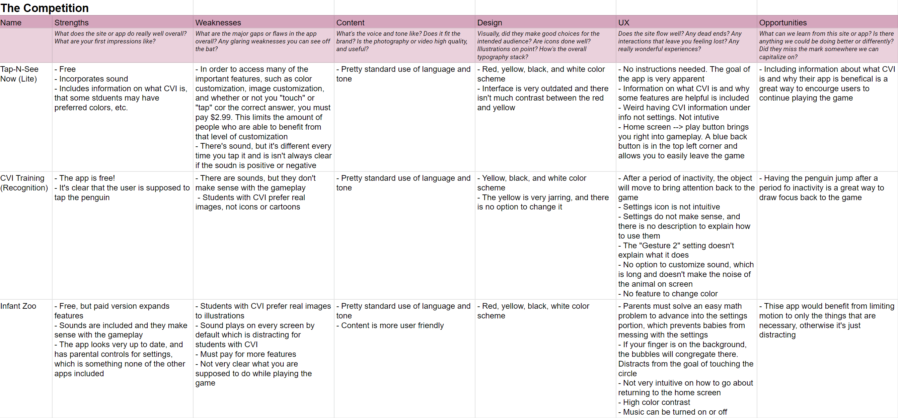
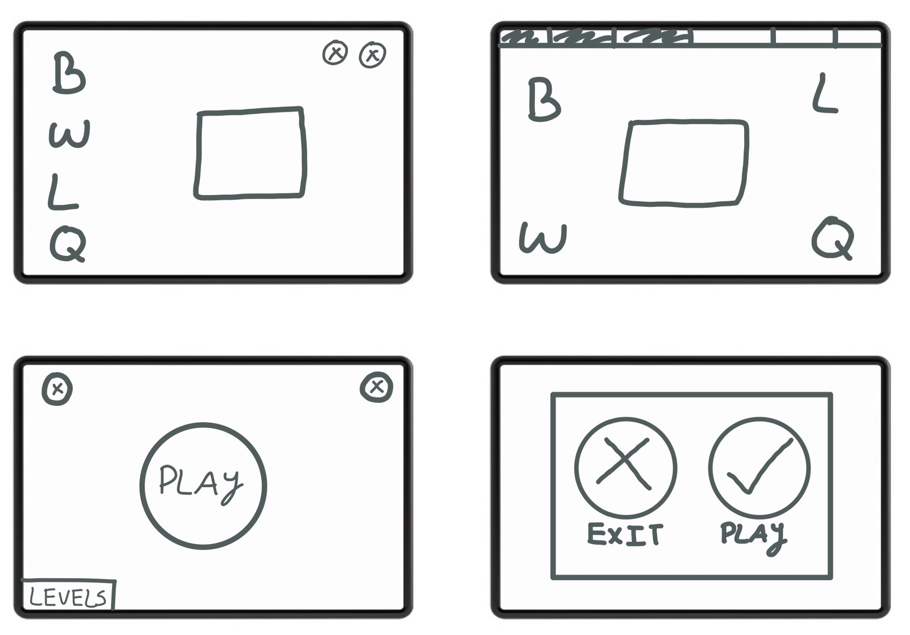
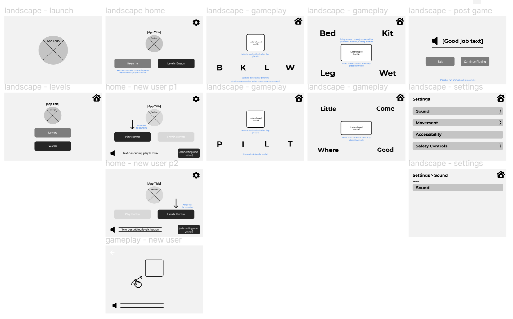
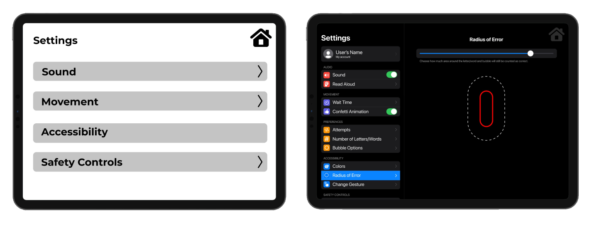
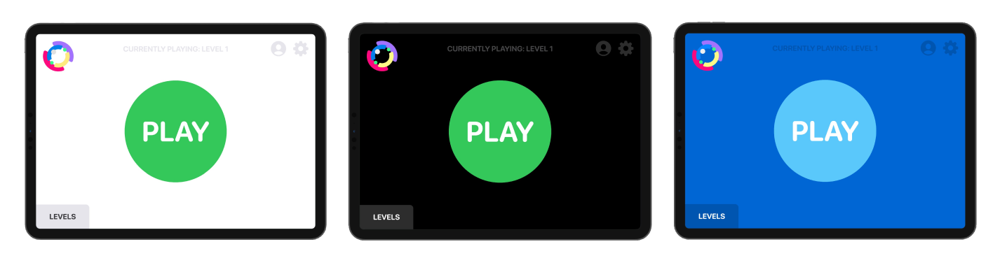
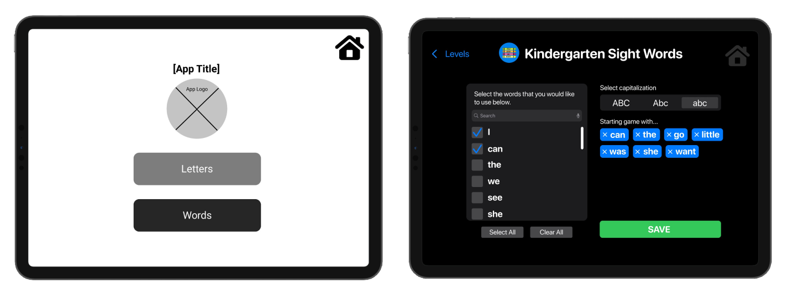
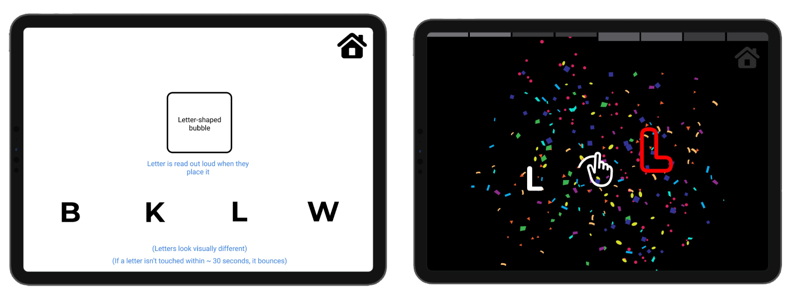

Role: UX Researcher, UX/UI Designer
Duration: Aug. 2021 - Dec. 2021
Responsibilities: UX research, wireframing, prototyping, collaborating with PM & developers
As App Team Carolina's first project, Bubbly was an especially exciting and challenging app because we would be designing for students with a visual impairment that no one on my team had previously known about. This iPad app was created as an interactive game for young students with Cortical Visual Impairment (CVI) to help them improve their condition. Since our team was unable to usability test with students, the feedback we've been getting from teachers has been all the more meaningful to our team as we see our efforts making a real difference in these students' lives.
Not many apps exist on the App Store for students with CVI, and due to their unique visual needs and often young age, most students with CVI cannot access the abundant online literacy resources that are available to their sighted peers
Design an app that allows users with Cortical Visual Impairment (CVI) to improve their condition while having fun playing a game that our client can use in her classroom. Our app will also help younger users learn how to read by catering to the needs of their condition
Cortical Visual Impairment (CVI) is the most common cause of permanent visual impairment in children. It’s most common in babies and young children but can continue into adulthood. Although there’s no direct cure for CVI, vision rehabilitation can help people with CVI significantly improve their vision.
We would be unable to conduct listening sessions or usability tests with students because they are generally under the age of 10, but our clients are highly qualified to instruct our team as teachers of the visually impaired, and one is a Doctoral students at the University of Northern Colorado pursing a Ph.D. in Special Education with an emphasis on CVI.
When it comes to reading, children with CVI need to be taught to understand what they are seeing by highlighting the shape around the word. Our game is designed based on the bubble-word strategy, which was developed by Dr. Christine Roman-Lantzy. The game will task users with dragging and dropping words into their bubbled shapes so they can learn to recognize sight words.
Focusing. People with CVI have a difficult time narrowing their focus and can become easily distracted by motion, color, and sound
Solution: Have intent when using color, sound, and motion in a way that isn't aesthetic, but rather draws their attention back to the task at hand
Limited Mobility. Some users with CVI have limited mobility
Solution: Not only should the app be switch control compatible, but each screen should be laid out in a way that makes the vertical and horizontal selections of the control easier. The bottom of the app should also have blank space at the bottom to accommodate an iPad stand that may cover it
Customizable Settings. Parents and teachers need to be able to customize the settings of the app, but students shouldn't be able to navigate to those screens. We should try to prevent them from ending up there on accident by making them less visable to students
Solution: Incorporate a child lock feature and make it so that the settings icons easily blend into the background so a student isn't likely to click on them
Illustrations v.s. Real Images. People with CVI are oftentimes confused by illustrations
Solution: The app should not include any illustrations, rather all images should be of the real thing (like a real picture of a cat versus a drawing)
There aren't many preexisting apps for CVI, and the ones that are out there lack the setting customization (at least for free) that our client needs for her students. Putting a price tag on the features also limits more people from benefitting from things like higher contrast or sound volume that could mean the different between a student being engaged with the app or not. Most importantly, none of the apps help with reading ability, just focus.
There are two types of users for our app, either a guardian or a student. We want the student to have a seamless and easy experience of opening the app and immediately hitting the "play" button to start a game with the settings and level pre-selected by a guardian.
Initial versions of Bubbly were mainly focused on the gameplay itself and how best to lay out the screen to be most easily compatible with switch controls and limited mobility. We were also concerned with how to draw the user's attention back to the screen, opting for a combination of sound and motion.
Our wireframes highlighted the primary user flows of 1) a guardian setting up the game for a student and 2) the student playing the game. Since we would be sending our wireframes off to clients and developers, we made sure to label our CTAs and provide instructions for what would happen when a user interacted with each screen.
Since we were unable to conduct usability tests on students, we heavily relied on the expertise of our clients during our weekly meetings. During our meetings, we would review their written feedback on the prototype and ask questions so we could refine our mockups. Here is some feedback we received:
"Love the simplistic design with minimal distractions."
"The settings icon needs child lock settings like holding the icon down or double-tapping, for instance."
"Make sure they have the option to change the color palette."
"Use all lowercase or all uppercase letters, the students are confused by sentence case."
"Add additional settings to give educators and parents extensive customization options."
"When the answer is not correct, have an "oops" sound and the correct one will bounce."
Our clients had many features that they wanted additional customization for, notably with the settings. Our app needed to be compatible for a variety of users with unique accessibility needs, so we added in everything from color customization to a radius of error when dragging and dropping a letter. A notable feature was the progress bar, which needed to be designed only for guardians to interact with.
#1 - Settings needed to have increased customization options
#2 - Dark mode, light mode, and a mode with customizable color were added as well to accommodate users with preferred colors.
#3 - The prototype had no option to customize each level, so in the mockup we wanted guardians/teachers to have extensive customization for gameplay.
#4 - Include a progress bar that is designed for parents/guardians to view and keep track of and that students wouldn't accidentally touch
Taking into account our information architecture, all portions of the app that students are intended to interact with are bright, colorful, and obvious, meanwhile parental controls blend into the background since they were not intended to stand out to the student.
Although we were unable to speak with the students personally, a developed, interactive version of the app was sent to our client on TestFlight, and it has gotten resounding feedback from educators, such as:
"I didn't have to teach her the game. She picked it up pretty fast. She kept saying after every letter, 'I did it!' "
"Two pre-school teachers watched my student play the game. They loved it and thought this might be something all of their kids might be interested in!"
"I told three of my CVI colleagues about the app and they absolutely want to try it with their students."
"I tried this app with one of my preschoolers who has a diagnosis with CVI this week! And she absolutely LOVED it!"